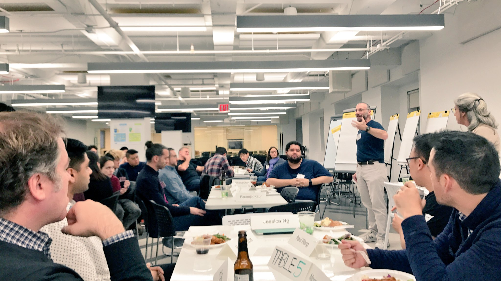
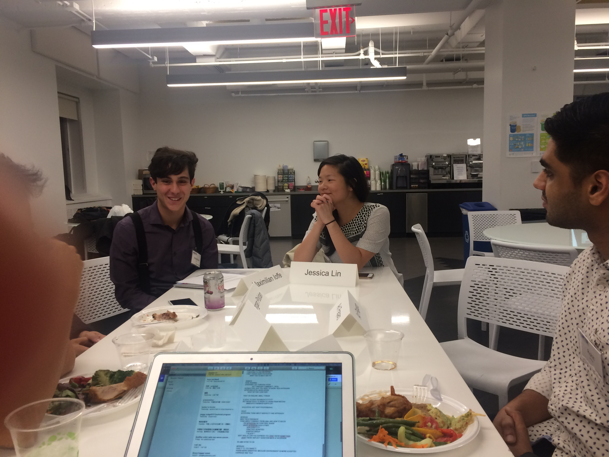

Hunter CS and NY Tech - it takes a village

Figure 1: The NY Tech community and Hunter CS at Yext
One of my goals when I came over to Hunter was to help establish Hunter CS as the place to be for CS in the city. Hunter already had a solid CS program before I joined but it isn't well known. It also doesn't have an established tech culture.
It's an ambitious goal but if it can be done, what a game changer. A lot of people talk about equity, diversity, and social justice but if we can establish Hunter as the place to be for CS in NY, what a win. An affordable, accessible institution where you can get a great CS education.
The truth of course is that I can't accomplish this - at least not by myself. I'm just one person. Fortunately, there are so many wonderful people in the New York Tech community that want to help bring opportunities to the kids.
Last Thursday evening we got the ball rolling. Twenty five representatives from the tech community got together at Yext with about a dozen of our Hunter College CS students. The conversation started with a discussion of perceptions of Hunter and the students sharing what their experiences were like. By the end we were all brainstorming as to how we can work together to best prepare Hunter students to become members of the New York Tech community.
I know the students left the evening energized and I did as well. I hope our friends in Tech felt the same.

Figure 2: Max talking about Hunter to Jess and the rest of the table
We had representatives from (in alphabetical order)
- Animoto
- Beeswax
- Bloomberg
- Civic Hall
- eBay
- Genacast Ventures
- JW Player
- Meetup
- MongoDB
- Motivate (Citbike)
- Quentin Road Ventures
- Two Sigma
- Union Square Ventures
- Workbench
- Yext
at the event and then there were plenty of people who want to be part of this who couldn't make it on Thursday.
I told the participants at the event that I can't make this happen. I can merely get the people together who actually can. I'm grateful to all my friends who are now a part of this and I'm looking forward to working with them, my students and my colleagues to create a Hunter CS to Tech Community pipeline that's second to none.
Comments
Comments powered by Disqus